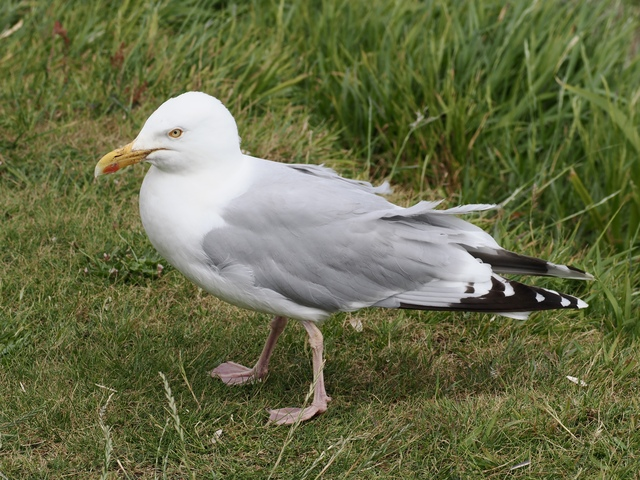

European Herring Gull
Larus argentatus
Order: Charadriiformes
Family: Laridae

A medium-sized "large" (genus Larus) gull. White head and body with pale grey wings. Adult has staring yellow eyes and pink feet. Yellow bill with a red gonys. When one thinks of a gull, it's probably this one. There's actually such no species as a "seagull"! Anyways, all my gull pages will be about adult birds, because I am inexperienced in immature plumages... so far.